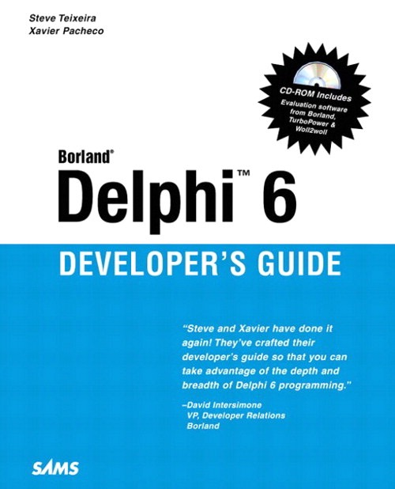

Delphi 6 developer's guide
Published by : Sams
Writed by : Bob Swart, Dan Miser, David Sampson, Nick Hodges, Ray Konopka, Steve Texeira, Xavier Pacheco
Published date : 14/02/2006
ISBN-10 : 0768658799
ISBN-13 : 9780768658798
Language :  English
English
Web site : https://www.informit.com/store/delphi-6-developers-guide-9780768658798
About Delphi 6 developer's guide
Borland(r) Delphi 6 Developer's Guide is a new edition of the #1 best-selling Delphi book by authors Steve Teixeira and Xavier Pacheco. Steve and Xavier are of the winners of the Delphi Informant Reader's Choice Award for both Delphi 4 Developer's Guide and Delphi 5 Developer's Guide.
Borland(r) Delphi 6 Developer's Guide is completely updated for Delphi 6 and includes in-depth coverage on Borland's new CLX architecture, DBExpress Applications, SOAP, CORBA, WebSnap and BizSnap features. It continues as a complete reference and authoritative guide to the newest version of Delphi.
Where to buy ?
This book has the ISBN13 "9780768658798".
If it is still available for sale, you can order it in your favorite bookstore, by its publisher or online at
Amazon CA,
Amazon FR,
Amazon JP,
Amazon UK or
Amazon USA depending on your country.
Table of content
Introduction
Part I: Development Essentials
Programming in Delphi
The Object Pascal Language
Adventures in Messaging
Part II: Advanced Techniques
Writing Portable Code
Multithreaded Techniques
Dynamic Link Libraries
Part III: Database Development
Delphi Database Architecture
Database Development with dbExpress
Database Development with dbGo for ADO
Part IV: Component-Based Development
Component Architecture: VCL and CLX
VCL Component Building
Advanced VCL Component Building
CLX Component Development
Packages to the Max
COM Development
Windows Shell Programming
Using the Open Tools API
Part V: Enterprise Development
Transactional Development with COM+/MTS
CORBA Development
BizSnap Development: Writing SOAP-Based Web Services
DataSnap Development
Part VI: Internet Development
ASP Development
- by Bob Swart (with Micha Somers)
Building WebSnap Applications
Wireless Development
Index